Back to builder
Android scenery across 11 games
Download the Thor-tested PokéDaisy APK
The same APK passed the recorded field, winter, automatic-weather, idle-battle and active-battle tests for all 11 profiles. 33 cold starts passed audio priming checks. Tests used Voxel 3D, Expand aspect, Reduced effect detail and native 1× game speed. Full effect detail was not qualified.
Automatic climate follows calendar seasons and chooses season-weighted weather every fifteen minutes, with gradual fades. Repeated weather can last longer. Manual choices remain available. Native scripted weather takes priority; cosmetic climate stays outdoors and does not change gameplay RNG or battle weather.
Reviewed profiles cover environmental plants, encounter grass, trees, rocks, cuttable trees and winter land coverage. Each game retains its own material colors. Coverage remains limited to recognized assets and tested scenes; this is not a full-playthrough certification or a claim that every asset is 3D.
This update adds 103 recognized indoor plant profiles and ten framed bamboo-screen profiles, including Lazarus’s actual town rooms, with source-colored leaves and preserved floor tiles. Camera resets now complete atomically with frame calculation; a reproduced race could otherwise create invalid drawing coordinates. The fixed camera passed a two-million-frame concurrent-reset host test, followed by the recorded exact-APK Thor checks.
Let’s Go Pikachu
Minimum sampled field / winter / automatic climate / idle battle / active battle FPS: 59.7 / 59.7 / 59.7 / 59.7 / 59.7. The retained measured phases passed the frame-presentation and audio gates.
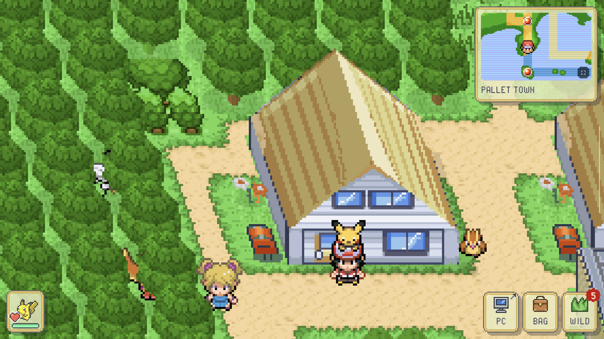
2D/3D, four seasons, weather and battle screenshots
Radical Red
Minimum sampled field / winter / automatic climate / idle battle / active battle FPS: 59.7 / 59.7 / 59.7 / 59.7 / 59.7. The retained measured phases passed the frame-presentation and audio gates.
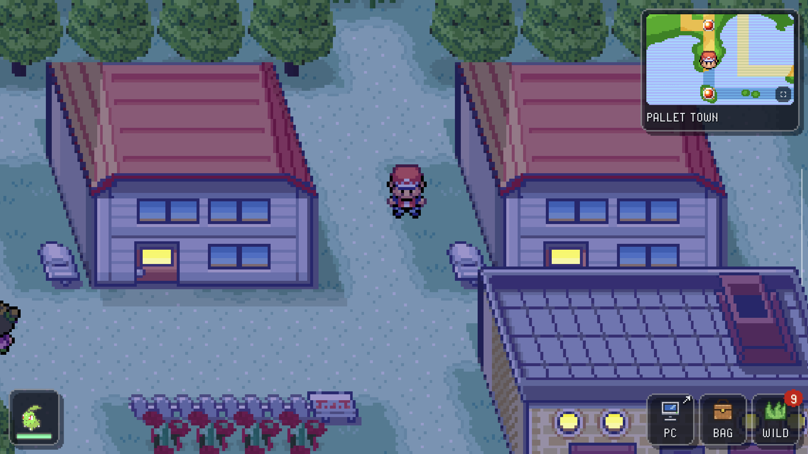
2D/3D, four seasons, weather and battle screenshots
Unbound
Minimum sampled field / winter / automatic climate / idle battle / active battle FPS: 59.7 / 59.7 / 59.7 / 59.7 / 59.7. The retained measured phases passed the frame-presentation and audio gates.
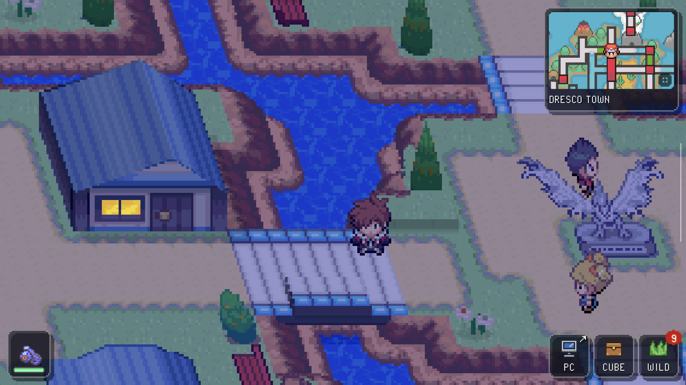
2D/3D, four seasons, weather and battle screenshots
Modern Emerald
Minimum sampled field / winter / automatic climate / idle battle / active battle FPS: 59.7 / 59.7 / 59.7 / 59.7 / 59.7. The retained measured phases passed the frame-presentation and audio gates.
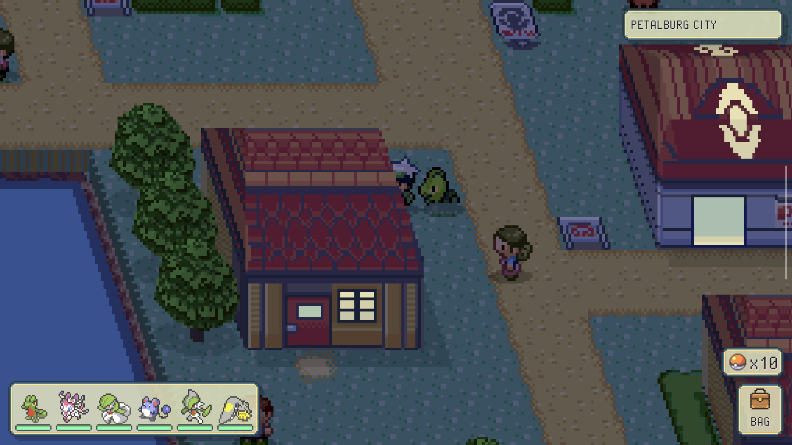
2D/3D, four seasons, weather and battle screenshots
Fakemon FireRed
Minimum sampled field / winter / automatic climate / idle battle / active battle FPS: 59.7 / 59.7 / 59.7 / 59.7 / 59.7. The retained measured phases passed the frame-presentation and audio gates.
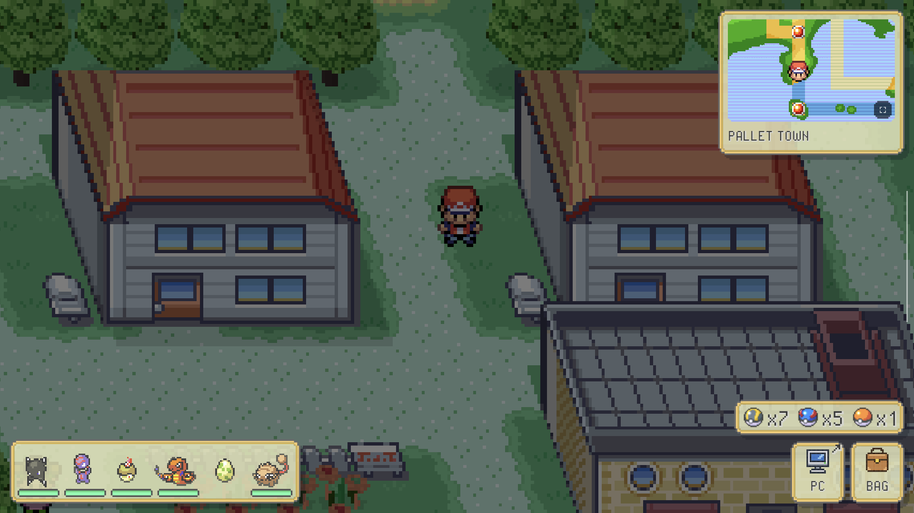
2D/3D, four seasons, weather and battle screenshots
Lazarus
Minimum sampled field / winter / automatic climate / idle battle / active battle FPS: 59.7 / 59.7 / 59.7 / 59.7 / 59.7. The retained measured phases passed the frame-presentation and audio gates.
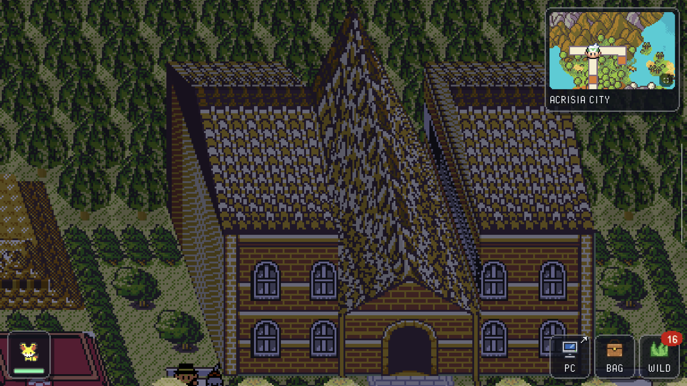
2D/3D, four seasons, weather and battle screenshots
Dragonsden
Minimum sampled field / winter / automatic climate / idle battle / active battle FPS: 59.7 / 59.7 / 59.7 / 59.7 / 59.7. The retained measured phases passed the frame-presentation and audio gates.
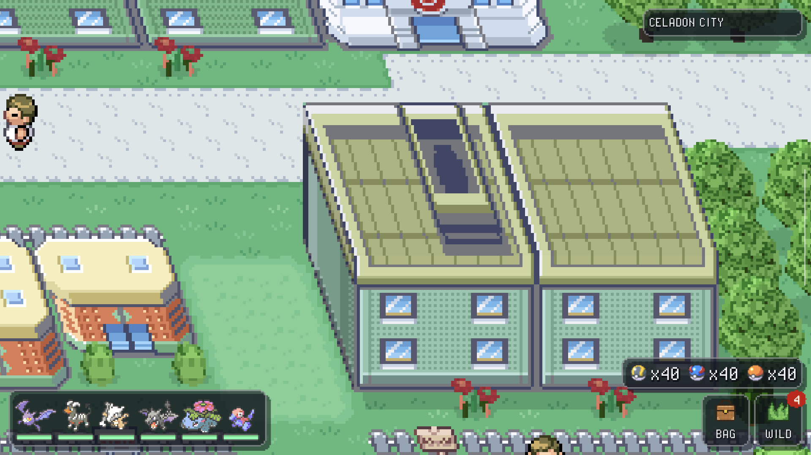
2D/3D, four seasons, weather and battle screenshots
Gaia
Minimum sampled field / winter / automatic climate / idle battle / active battle FPS: 59.7 / 59.7 / 59.7 / 59.7 / 59.7. The retained measured phases passed the frame-presentation and audio gates.
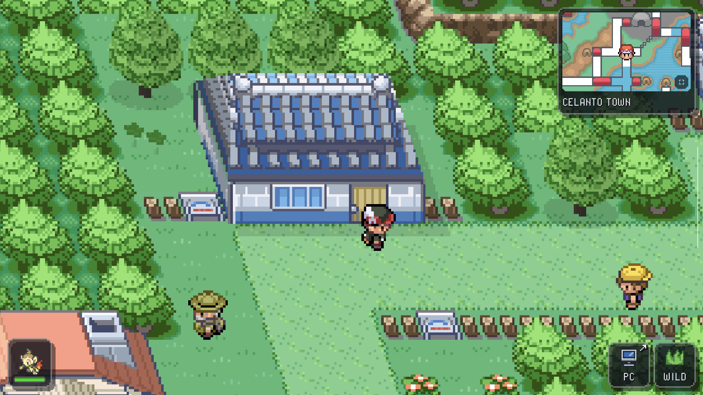
2D/3D, four seasons, weather and battle screenshots
Rocket Edition’s reviewed movable-rock sprite slot is entirely transparent and stays unregistered. No Strength geometry pass is claimed for that slot; cut-tree and breakable-rock checks remain required.
FireRed Rocket Edition
Minimum sampled field / winter / automatic climate / idle battle / active battle FPS: 59.7 / 59.7 / 59.7 / 59.7 / 59.7. The retained measured phases passed the frame-presentation and audio gates.
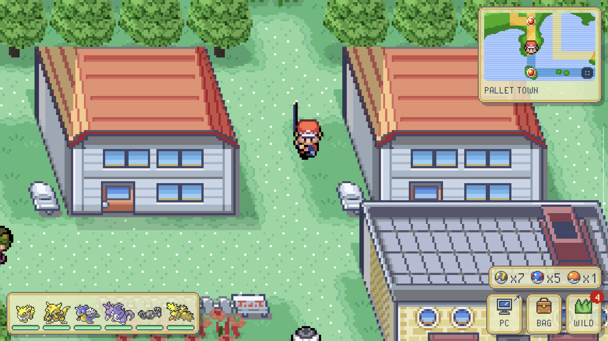
2D/3D, four seasons, weather and battle screenshots
Emerald Seaglass
Minimum sampled field / winter / automatic climate / idle battle / active battle FPS: 59.7 / 59.7 / 59.7 / 59.7 / 59.7. The retained measured phases passed the frame-presentation and audio gates.
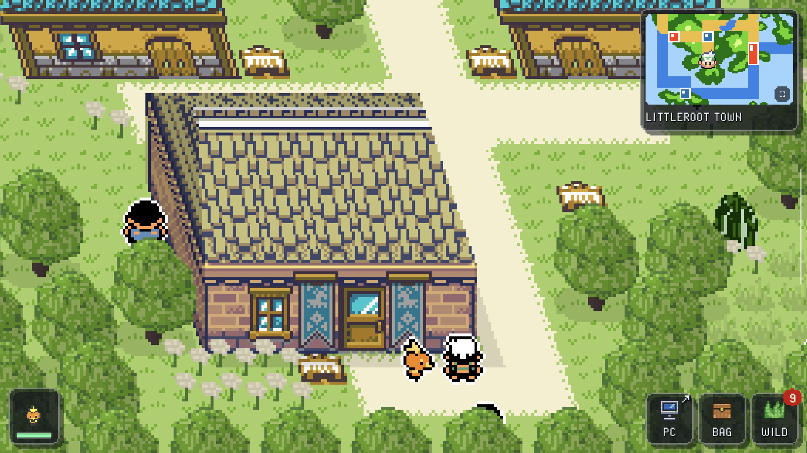
2D/3D, four seasons, weather and battle screenshots
Odyssey
Minimum sampled field / winter / automatic climate / idle battle / active battle FPS: 59.7 / 59.7 / 59.7 / 59.7 / 59.7. The retained measured phases passed the frame-presentation and audio gates.
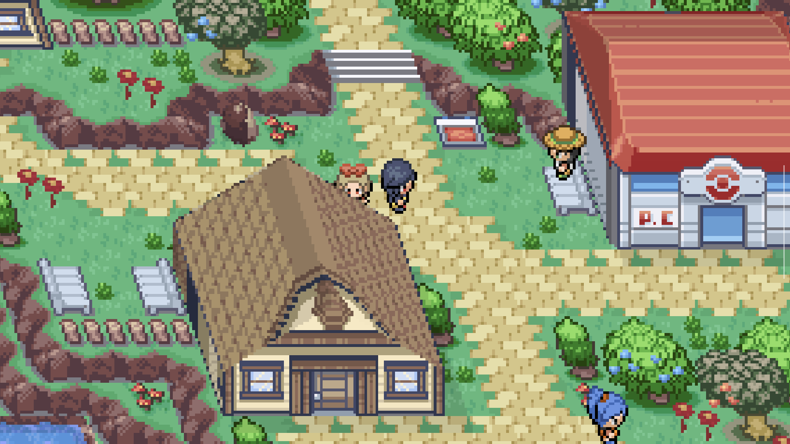
2D/3D, four seasons, weather and battle screenshots
Native-speed frames now publish on cartridge-clock deadlines to keep battle-to-field transitions steady as rendering cost changes. An early frame can wait up to 16.74 ms before publication. Every frame is retained, and audio is queued before that wait.
Native audio fills its real-audio buffer before playback to withstand initial UI work. Native-speed audio production uses Android’s audio-thread priority; optional ROM scans use background priority. 10 additional Rocket Edition cold starts passed with zero underruns. The shared ROM scanner now reuses its read window to reduce startup allocation pauses; 10 additional Fakemon building-scene cold starts passed with zero underruns. After priming the existing buffer, startup holds the core and queued sound for at least three seconds and waits for one continuous second of responsive UI frames. The eight-second timeout is bounded and disqualifies a test run. This adds a short loading pause; steady-state pacing and audio counters are unchanged.
Rocket tree clearing was verified through its own Leto NPC sequence; the unused retail HM route is not certified. Its Rock Tunnel probe uses a disposable Flash-lit setup; normal darkness remains preserved. Odyssey boulder testing uses its Magna Vis key item. Its cut-object check is a legacy-map/script compatibility probe, not proof of normal story access or Cut acquisition; the original ROM names that move slot Memento.
Winter ground recognition now uses exact ROM and tileset identities plus source-reviewed pixel masks. This fixes the reproduced sunset-colored town-ground gaps, Modern Emerald’s hedge edges and Unbound’s ground around conifers and the statue, including ground beside roofs, fences and mailboxes, while preserving those structures. The exact qualified source includes 97 full secondary cells and 2372 mixed-cell masks; only the games listed as passing are device-qualified. Buildings now use solid walls and shaped roofs from 19 reviewed source patterns across 11 passing games. Hip, flat and front-gabled roof families retain each game’s original textures, with shaded sides and contact shadows. The linked gallery includes matching 2D, 3D and winter screenshots. Coverage is limited to recognized patterns; unrecognized buildings and small roof details retain their source art. Source-reviewed facade bounds on 9 patterns keep original grass padding off walls and bases, with roof texture bounds handled separately. Wider showcase camera views received separate 65-second pacing and audio checks for: lazarus.
Source 3d1950843c86899d2b555f8b9427a9fade04a0f2; APK SHA-256 130b62f1ce29fad5a63cc5d9821b8c8319e1d38b6275c181118d3aa1cfdc39bc. Exact measurements, media hashes and review scope.
Held from this release: better-emerald-2: The local Better Emerald 2 ROM was produced from a base that fails the official BPS input checksum, and its output checksum also differs. Attack probes reset. No compatibility, scenery or performance pass is claimed for this invalid input; a correct patch/base and full retest are required. ash-gray: The current disposable movable-rock fixture does not produce a push in either 3D or native 2D on the Thor. The required interaction remains unverified, so Ash Gray is excluded pending a legitimate working fixture; no renderer defect or author-game bug is inferred.